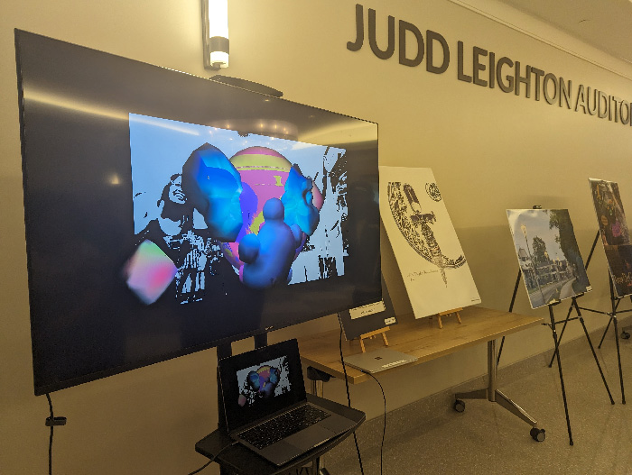

My first piece using Open Frameworks, created for both the Studio 304 Creative Showcase and YART in 2023. The piece involves the viewers via webcam - it captures their image, recolors it, and projects it onto a spinning ball.
Bonus: a shot of the piece in action at the St. Joseph County Public Library!

take me back to the gallery